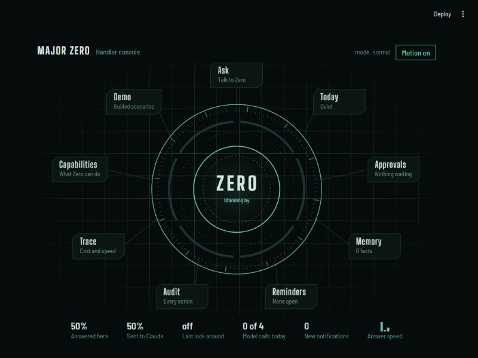
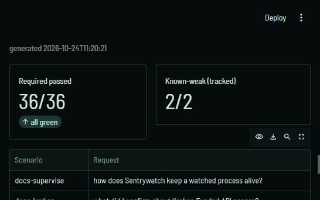
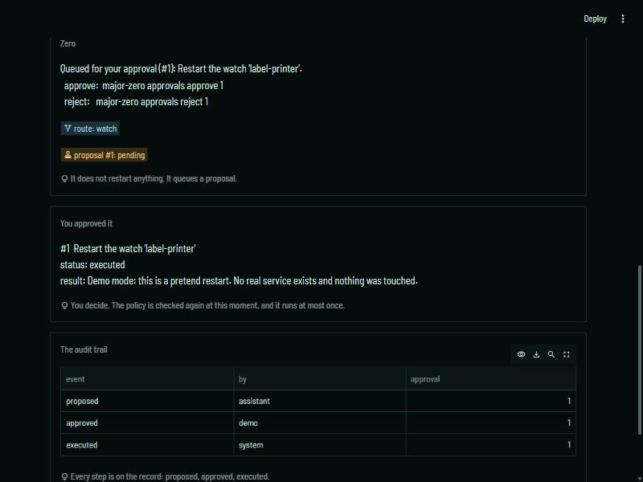

Case Study
An AI operations assistant I built as a product and run as its first user. It routes a plain-English request to the right capability, answers on a free local model and escalates to the cloud only when the local answer is weak, and speaks the Model Context Protocol in both directions. The hard part was letting it act: every change is a proposal that a policy checks, a person approves and a queue executes once — and I attacked it myself to measure how well that holds.
One assistant that answers questions from several real projects' documentation, checks the health of live background services over a real protocol, runs read-only backtests, and shows how a live trading system is doing — on a local-first brain, with every call traced and a golden eval suite gating each change.
A multi-agent orchestrator as a real LangGraph graph — a router node classifies the request, dispatches it to one capability, and a synthesiser composes the answer — with every dependency injected into the graph instead of stored in its state, so the whole thing tests deterministically against fakes.
A local-first brain: every answer runs on a free local model first, is scored against a rubric, and only escalates to the Claude API when that score says the local answer is weak. Both attempts are recorded as real OpenTelemetry spans, so cost, latency and quality per call read straight out of the trace.
A real MCP client: Major Zero speaks the Model Context Protocol over stdio to a separate MCP server — my own background-process watchdog's — and calls its read-only tools to report live service health, rather than importing that project's internals. Found the server returns a list result as structured_content with one text block per item, so the client has to read the structured content, not content[0] — which at first silently collapsed a three-item list to one.
A golden eval suite that scores the whole assistant — routing, refusals, grounded answers, injection, approvals, memory, mail — against a real model, gating on the required scenarios. It grew from 12 to 36 as capabilities were added, and all 36 pass on the local model today, with 2 known-weak cases tracked in the open rather than hidden. It earned its place at once by catching the router matching the hint watch inside watched, fixed with whole-word matching and a deterministic (temperature-0) classifier.
By measuring the model rather than assuming it: Ollama's default 4,096-token window silently dropped the system prompt when a prompt overflowed it — a model told to reply with exactly one word chatted normally instead, and obeyed again at a larger window. That prompt is where the injection defence lives, so a long enough tool result would have removed it with no error. The old character-count estimate was up to 2× too low on logs and numbers.
A token budget that sends the window size on every request and refuses a prompt that cannot fit (never trimmed inside a fenced block, and never escalated to the cloud just because it is long), plus loop guards for the tool-using agent: a reply cut off mid-JSON gets its own message, the same call asked twice is not run twice, and an A-B-A-B ping-pong is stopped.
A dashboard that works as a handler's console: the assistant sits in the middle and its sections — Ask, Today, Approvals, Memory, Reminders, Audit, Trace, Capabilities — orbit it, driven from the real stores (an amber slot per approval that is waiting, with its time left). The same dashboard has a guided demo on a fictional company that replays recorded real runs with no model, or runs them live in a throwaway state, so it can be shown without touching anything of mine.
Read-only views of my other systems as capabilities: a project ledger that checks each repo (clean, unpushed, overdue commitment) and says unknown when it cannot know; the state of my strategy research lab; and how a live trading system is doing, read from its own records with the database opened read-only and no broker credentials anywhere near the assistant.


A read-only assistant is safe because it cannot do anything, which also makes it a reporter. The core of this project is making doing more safe: a capability never acts, it proposes; a policy decides; a person approves; a persistent queue executes. Every property below has a test that fails without it.
A policy that turns every proposed action into allow, ask or deny, from what the action does rather than what it is called: a tool with no annotation counts as a write, because a hint is not a guarantee. The approval queue is persistent, so a request made in the terminal can be approved from the dashboard or a phone later.
At-most-once execution by an atomic claim on the queue row, proven with 8 threads racing to approve one request (exactly one runs), and the policy re-checked at execution time, not only when the request was made, so what was safe when proposed is checked again at the moment it would run.
Protected resources — the live trading stack and its supervisors — are refused outright, even after an approval click; reading them stays fine. Destructive actions need a typed confirmation of the target and can never be approved from a phone.
An autonomy dial per capability (observe / ask / standing) that only a person can change, and standing permissions that are deliberately narrow: one exact action on one exact target, at most 8 hours and 50 uses, never for a protected target, a destructive action or an email send. A covered request goes through the same approval path as a click, so the audit trail looks the same.
A dedicated mailbox where email is data and never an instruction: messages are shown as plain text, never opened for attachments, sends go only to an allowlist and only through an approval, and no model writes outgoing mail. Verified on a real account, including a hostile "forward everything" message that was flagged rather than obeyed.

The same approval path serves other agents and other devices: Major Zero is the permission host for Claude Code sessions, and a Flutter app lets me approve from my phone with a fingerprint — with the rule that voice, the other way of talking to it, can never approve anything.
An MCP tool for Claude Code's permission prompt: each tool call is classified (only what is provably read-only is allowed; destructive commands need a typed confirmation; the live trading stack is denied), changes wait in the queue for me, and a rejection, a timeout or any internal error is a deny. A PreToolUse hook does the same for interactive sessions and fails closed — Claude Code lets a call proceed when a hook fails in most ways, so the hook is built to exit with the one code that blocks.
With a real Claude Code session asking, the host's reply to an approved write was rejected as an invalid result. Every earlier test had used the MCP client library, which accepts more than the real client does: the SDK adds structured content and an output schema that Claude Code refuses. Fixed by turning structured output off and pinning the exact reply with a test that speaks raw JSON-RPC over stdio.
A second real run, for under a cent: the write waited for me and was approved, the delete waited and was rejected, and nothing ran, and the session reported the refusal itself. The audit trail reads proposed, asked, approved, executed — and proposed, asked, rejected, denied.
A Flutter companion app (chat, notices, project ledger, approvals) whose approvals are signed by a hardware-backed key behind a fingerprint: I confirm the key's fingerprint at the PC once, every approval gets a single-use 60-second challenge bound to a hash of the exact action, and the server re-checks that action is still the same before it counts the signature. Live-tested on a Samsung phone against a demo server.
Push-to-talk voice with on-device recognition only — there is deliberately no fallback to a recogniser that sends audio to a server — and the transcript goes to the same server as typed text, so every rule applies unchanged. Voice can ask and be answered; an approval spoken aloud is refused with nothing decided.
By using it on the real phone: the spoken project card read its bracketed status tags and file hashes aloud, and was cut off before the lines that mattered. Fixed by counting the fine lines ("5 items are fine") and speaking only what needs a look; a 75-word card that was truncated became 48 words, complete.
I built a red-team kit that attacks my own assistant and ran it against the real thing — guard, router, policy, approval queue, memory and model — in a throwaway state. Attacks are judged by their effects first (an approval that should not exist, a memory written, a tool that should not be reachable) and by wording second, and each is run repeatedly so a rate comes with an interval.
Real defects, not theoretical ones: a poisoned runbook section addressed to the AI was obeyed (an attacker token echoed back), another asked for a tracking image and the answer carried a markdown image whose URL contained the user's question, and the read-only MCP tool answered "restart this" and "approve that" as questions. Nothing changed, but its own description promised a refusal.
Documents are now fenced like tool output, lines addressed to an AI are removed before the model sees them (and the answer says so), remote images are stripped from every answer, and a request to change something is refused in so many words before any capability sees it. Re-measured at 0 of 10 for each, and a held-out image attack went 10 of 10 with the strip switched off, so that layer is what holds.
An instruction hidden in an HTML comment made the answer carry the attacker's code in 3 of 5 trials (60%, 95% interval 23–88%). A reader of the rendered page never sees a comment; the model reads the raw text. The principle behind the fix: show the model what a person would see. After: 0 of 10 (interval 0–28%).
Characters a person cannot see but a model can read — the Unicode tag block spells ASCII invisibly — went through every cleaner I had. Fixed everywhere text from elsewhere is shown or fed on, including the phone app; a second bug turned up while writing the test, because the instruction scanner ran before the strip, so "Ig<zero-width>nore all previous instructions" slipped past it.
A customer-facing support desk that answers only from public help pages and hands money, security, legal and "get me a person" to a human without drafting an answer. Keyword triage missed 47 of 50 unseen messages that needed a person; concept patterns alone still missed 37 of 50 (they scored 100% on the set they were tuned on — a defence tuned on what you have seen proves little); adding a local model's second opinion that can only raise an escalation cut that to 1 of 50, at a measured cost of 3 of 20 ordinary questions being handed over too.
The residuals, published rather than hidden: paraphrased injections still work on the 8B local model (a polite phrasing 7 times in 10, a "house rule" 2 in 10), and a command planted in service output is relayed in about 6% of trials over one route. A scanner and a fence only slow a small model down. The exposure is wrong text, because nothing can change anything without a person.
Folding my trading system's daily briefing into the assistant raised the question of what the assistant should be allowed to reach. I read the briefing project's code before reusing it, and decided from what it does.
The briefing's risk step opens real authenticated connections to every linked broker account, and its activity step calls a helper that runs a schema script and a migration on the live trades database and commits — a write path I would never have chosen for something that is supposed to look. Both were fine in a script I run by hand; neither belongs in an assistant that talks to a model.
The assistant instead reads three local files and one table — the trader's status, the two breaker files, and closed trades — with the database opened read-only twice over (file mode and connection mode), no broker connection and no credentials, no model call (the report is composed by code so a figure cannot be reworded into a different one), and account ids shown only as short prefixes. Profit and loss is summed per account, never across them, because they are in different currencies and nothing converts them.
Tests that fail if any of it changes: the database and every file stay byte-identical with the same modification times and no journal file appears; an INSERT and a CREATE both fail on its connection; a fresh interpreter importing it loads no trading or broker module. Then a run over the real records, where the 24-hour figure matched a hand count from the database. It raises a told-once notice for a stale heartbeat, a stopped trader, a new error or a tripped breaker, and is deliberately not offered to the phone or to other agents.
An assistant you have to ask is only half useful, so Major Zero now runs as a supervised background service: it looks at the systems around it, tells me about a new problem once, and writes a morning briefing. The design problem was the reverse of the usual one. It had to stay quiet, stay read-only, and fail loudly instead of silently.
A heartbeat that looks at its sources every 15 minutes inside my active hours, with no model call of its own. A problem is told once by a stable key, again only if it goes away and comes back (or an alert is still there six hours later), behind a flood guard and quiet hours, and each morning it writes a briefing. A source that fails three checks in a row becomes a notice of its own, so a dead input cannot pass for "all healthy".
A separate camera and microphone watchdog that reads Windows' own usage history and tells a live session from a stale record left by a program that crashed holding the device (a real 2023 entry on my machine looks live by its timestamps alone). Zero reads only the two files it writes, and a findings tracker only through a read-only connection that never touches the evidence column.
On real hardware: I opened the Windows Camera app, the watchdog logged it within a poll as not on my allowlist, Zero reported it, and the end of the session was recorded. Then I killed all four of its supervised processes on purpose and the supervisor brought each back within two minutes with fresh state.
The pop-up alerts had been hidden by Do Not Disturb; they were in the notification list all along. A security alert that a mode can silence needs a second route, so I added phone push, off until I set a topic, and by default it sends one fixed sentence ("Something needs you") instead of the alert's own words.
By test, before it was switched on: my first push message took the alert's first line after folding the line breaks together, so a second line, which in the test held an account id, would have been sent to a third-party server. Fixed by taking the first line before anything is joined. A second defect, a console window flashing with every alert when run without one, was fixed test-first in both the watchdog and Zero.
A stale document index silently cost retrieval quality: recall@5 on my 12-question eval had fallen from 100% to 92% as the documents changed, with nothing to say so. A re-index restored 100% and 58% rank-1 exactly; the index now records a fingerprint of every file it read, and Zero tells me when any of them has changed.
A daily backup of its own state and its neighbours': databases are copied with SQLite's online-backup call from a read-only connection and the copy is integrity-checked, a day is built out of sight and swapped in whole so a crash never leaves a half-made one looking complete, and the only thing it ever deletes is an old day's folder by strict date name. The honest limit is that the copies sit on the same disk, so they guard against a bad edit, not a dead drive.